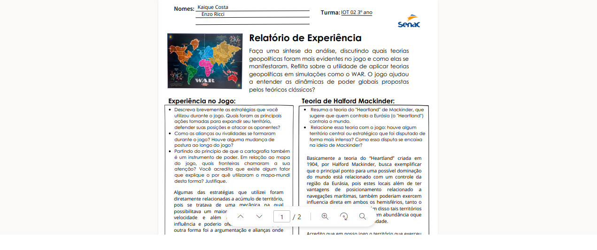
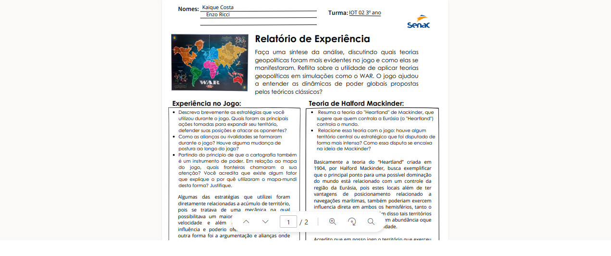

Meu nome é Enzo Ricci Bonatto Batista Lima, nasci no dia 24/06/2007, tenho 17 anos, sou torcedor do maior clube de São Paulo o SPFC.
Tenho variados gostos, entre eles estão:
Meu Ensino Médio foi exaustivo, porém muito importante para minha formação, tanto acadêmica quanto como pessoa, tive muitos momentos de felicidade, de estresse, de tristeza, pressão. Todos esses momentos foram importantes para eu me tornar uma pessoa mais responsável e me desenvolver para me tornar um adulto melhor, além de me preparar para os desafios que virei enfrentar ao longo da minha grande caminhada da vida, que pouco ainda desfrutei. Com isso, vejo que o Ensino Médio foi uma das fazes, se não à mais, importante até o momento em minha vida. Agradeço a todos que estiveram presente nesta caminhada comigo, tanto professores quanto alunos, que muitos deles se tornaram não só alunos e professores, como colegas e amigos que levarei pra vida.
 

Tais atividades foram as minhas favoritas por terem me feito aprender sobre assuntos que tenho interrese e me fizeram engajar em cada uma de suas especialidades, fazendo com que eu aprendesse e me esforçasse por gostar dos assuntos abordados, o que fez com que eu aprofundasse meu conhecimento enquanto eu me divertia por me enteresar pelos assuntos.